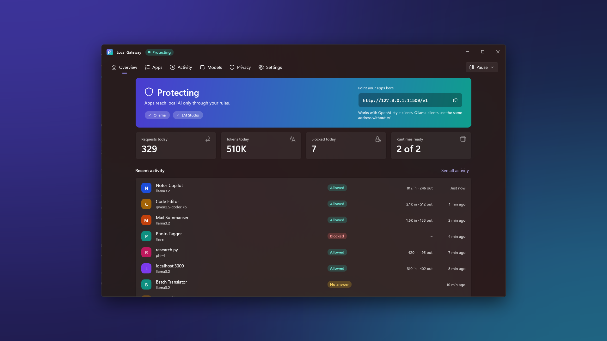
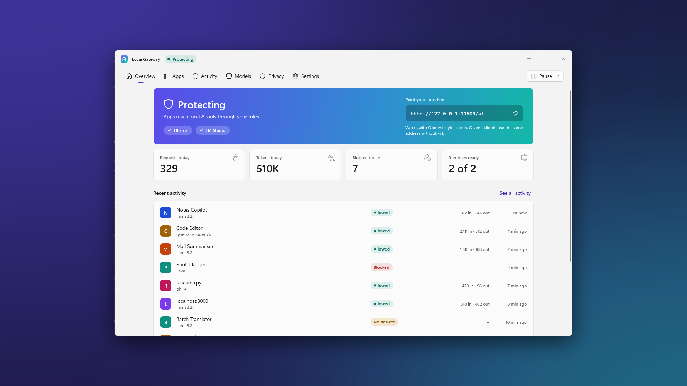
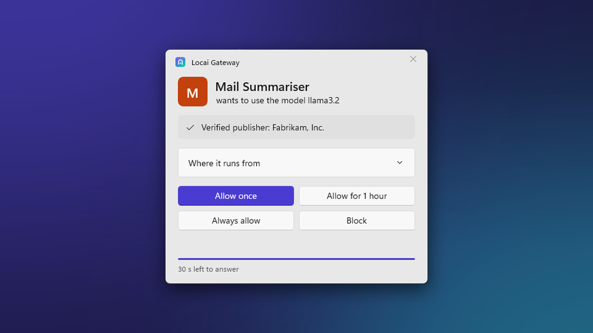
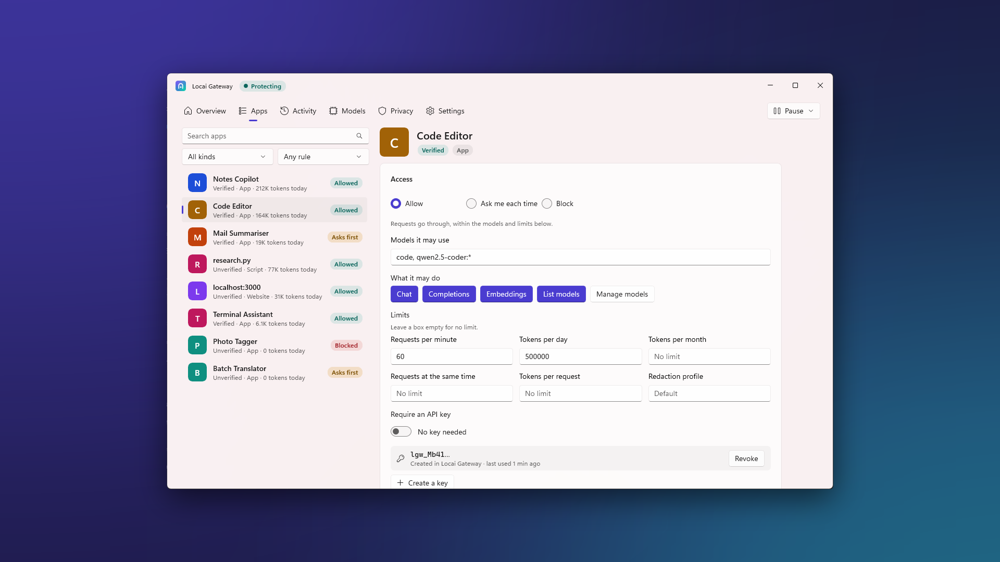
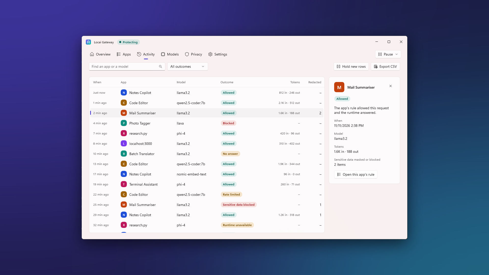
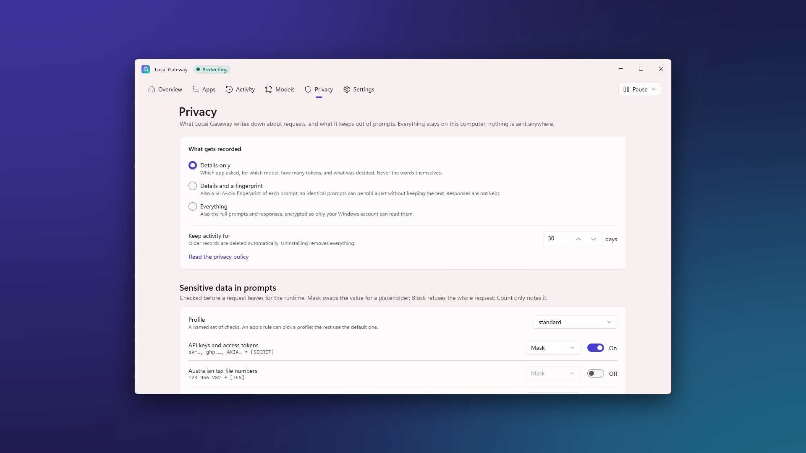
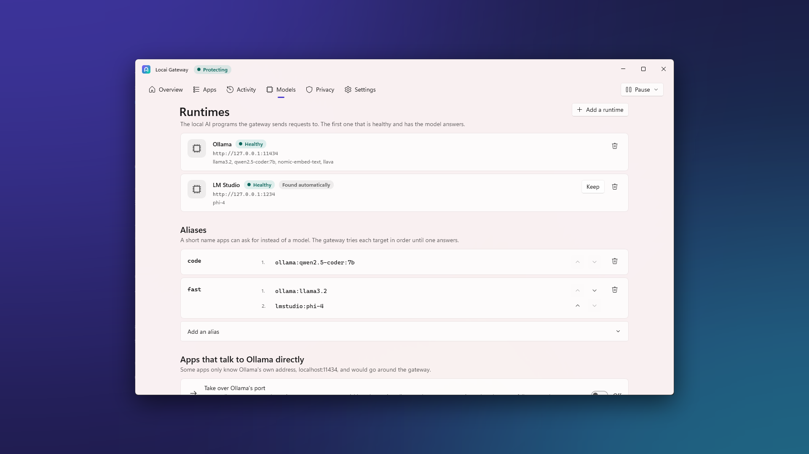
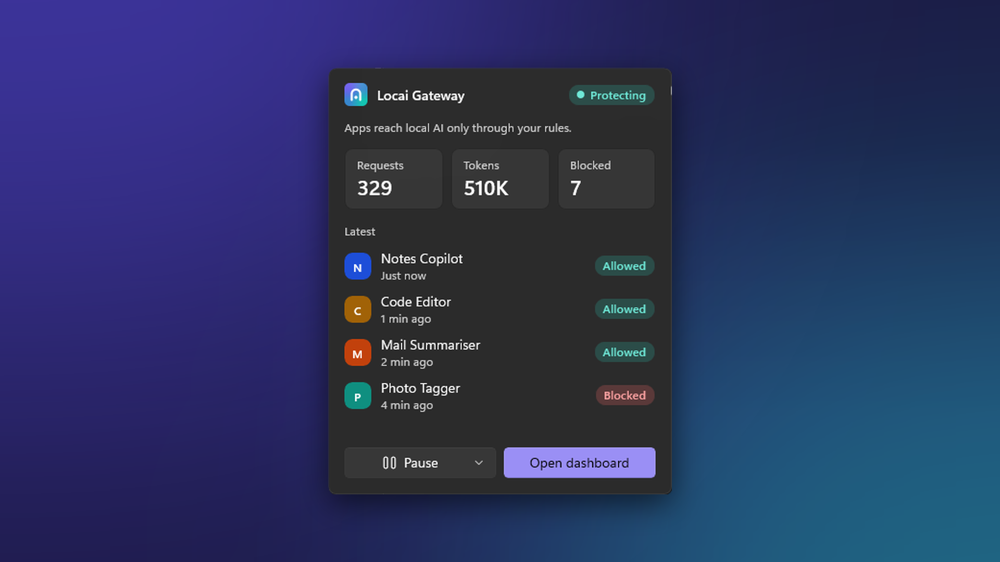

Free for Windows 10 and Windows 11
You decide which apps use your local AI
Locai Gateway sits between the apps on your PC and your local model runtimes, such as Ollama and LM Studio. It shows which app is calling, asks before a new one gets in, and keeps secrets out of prompts.
No account. No telemetry. Nothing leaves your PC.

Works with
- Ollama
- LM Studio
- Jan
- GPT4All
- llama.cpp
- Foundry Local
- Any OpenAI-compatible server on this PC
Local AI has no front door. This adds one.
A local runtime listens on a port on your PC. Programs that reach that port can list your models and send prompts, and the runtime does not tell you which program it was. Locai Gateway gives your apps one address to use and puts you in charge of who gets through.
-
Your apps
Anything on this PC that talks to a local model
- Editors and coding tools
- Chat and note apps
- Scripts and websites
-
Locai Gateway
Listens on
127.0.0.1:11500- Identify the program: name, publisher, signature
- Ask you if the app is new
- Enforce the app's rule and limits
- Redact or block secrets in the prompt
- Record the request in the activity log
-
Your runtimes
Running on the same PC
- Ollama, LM Studio, Jan
- GPT4All, llama.cpp
- Foundry Local
Control over every request
Each request is tied to a real program on your PC, checked against your rules, and written to a log you can read.
-
Knows who is calling
Every request is matched to the program that sent it: its name, publisher, code signature and package. Signed apps are told apart from unsigned ones.
-
Asks before first use
When a new app tries to use local AI, you get a prompt: Allow once, Always allow or Block. The request waits for your answer.
-
Rules for each app
Choose which models and endpoints an app may use. Set requests per minute, daily and monthly token budgets, and how many requests run at once. Require an API key if you want one.
-
Secrets stay out of prompts
Credit card numbers and API keys are masked, and private keys are blocked, before a prompt reaches the model. Turn on more detectors or add your own patterns.
-
A record of every request
The activity log shows which app called which model, when, whether it was allowed and how many tokens it used. Prompt text is not stored unless you turn that on.
-
Covers apps that only know Ollama
Optional port takeover moves Ollama to port 11435 and answers on 11434 itself, so apps with Ollama's address built in still go through the gateway. Off by default, and you can turn it back off.
-
One address for every runtime
Apps use the OpenAI or the Ollama API at one local address. The gateway finds your runtimes and sends each request to the one that has the model.
-
Pause from the tray
The tray panel shows status, today's numbers and recent requests. One click pauses all local AI traffic through the gateway until you resume.
-
Stays on your PC
The gateway listens only on the loopback address and connects only to runtimes on the same machine. No account, no telemetry, no cloud service.
A dashboard, a tray panel and a prompt
The dashboard has six tabs: Overview, Apps, Activity, Models, Privacy and Settings. Light and dark themes follow Windows or your own choice.
-

Overview Status, today's numbers and your runtimes on one page. -

Consent prompt A new app waits until you allow it once, always, or block it. -

Apps Every app that has asked, with its publisher and its rule. -

Activity Who called which model, and what happened. -

Privacy Redaction detectors, content logging and retention. -

Models Runtimes, their models, and aliases with fallbacks. -

Tray quick panel Status, pause and recent requests, one click from the taskbar.
Three steps
You keep your runtimes and your models. Only the address your apps use changes.
-
Install and run setup
The first-run setup finds the runtimes on your PC, asks what should happen when an unknown app calls, and shows the address your apps should use.
-
Point your apps at the gateway
Change the base URL in each app. For apps that cannot change it, turn on port takeover for Ollama.
# OpenAI-compatible apps http://127.0.0.1:11500/v1 # Ollama API apps http://127.0.0.1:11500 -
Answer once, adjust any time
The first request from each app raises a prompt. If you choose Always allow or Block, your answer becomes a rule that you can change on the Apps tab.
Your data stays on your computer
Locai Gateway has no servers. What it records is stored on your PC, for you.
- No internet connections. It accepts connections from this PC only and forwards only to runtimes on this PC.
- No telemetry. No analytics, no usage statistics and no crash uploads.
- Prompt text is not stored by default. The log keeps who, when, which model and how many tokens. Storing text is your choice, and full text is encrypted with Windows data protection.
- Records expire. Activity is deleted after 30 days unless you pick a different period.
- No account. Nothing to sign up for and nothing to sign in to.
Get Locai Gateway
Free from the Microsoft Store. It installs for your Windows account and updates through the Store.
- Windows
- Windows 10 version 2004 (build 19041) or later, or Windows 11
- Processor
- x64 or ARM64
- Price
- Free
The Store listing is not live yet. This button will link to it.